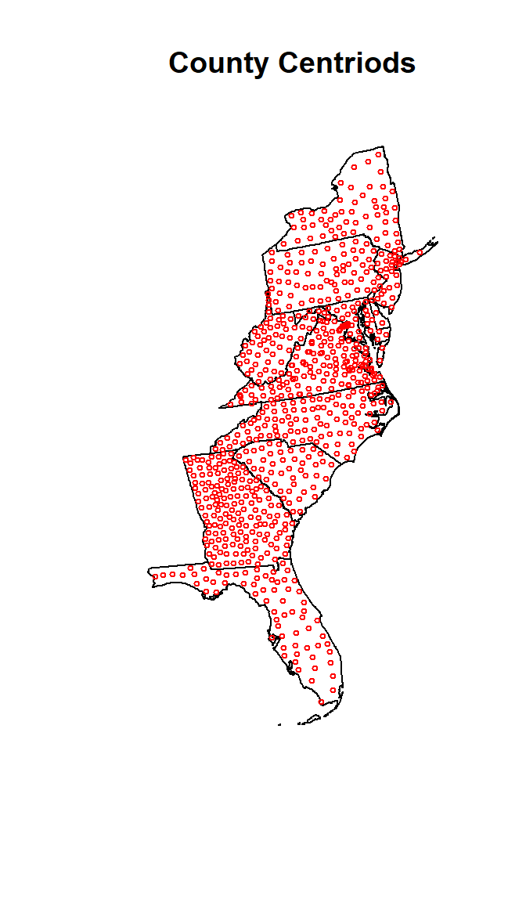
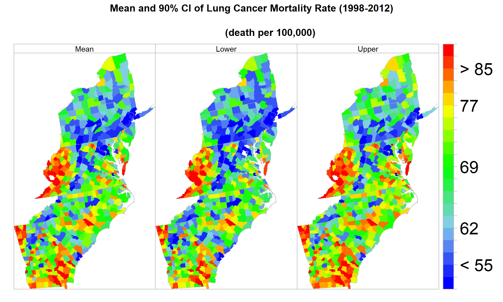
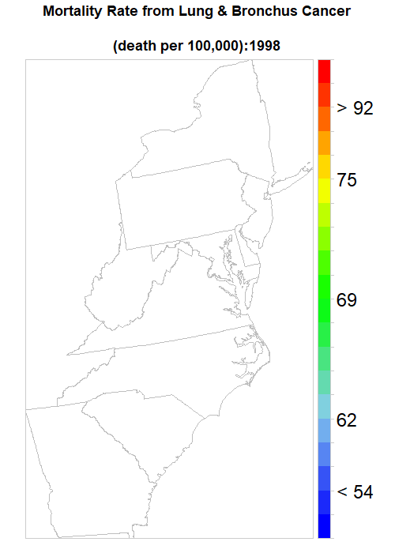

Working With Spatial Polygon Data
This lesson we will cover following:
The will use following data set fo US Atlantic regions (expcept Florida) which could be avilable fro download from here.
Age Adjusted Lung & Bronchus Cancer Mortality Rates by County
Age Adjusted Lung & Bronchus Cancer Mortality Rates from 1980 t0 2014 by county was obtained from Institute for Health Metrics and Evaluation (IHME). The rate was estimated using spatially explicit Bayesian mixed effects regression models for both males and females (Mokdad et al., 2016). The model incorporated 7 covariates, such as proportion of the adult population that graduated high school, the proportion of the population that is Hispanic, the proportion of the population that is black, the proportion of the population that is a race other than black or white, The proportion of a county that is contained within a state or federal Native American reservation, the median household income, and the population density. To reduce the noise due to low mortality rate in a small population size, we smoothed data with the Empirical Bayesian smoother, a tool for dealing with rate instability associated with small sample sizes. It takes the population in the region as an indicator of confidence in the data, with higher population providing a higher confidence in the value at that location. We used SpaceStat (Evaluation version) Software for smoothing data.
Age-standardized Cigarette Smoking (%) Prevalence by County
Age-standardized cigarette smoking (%) prevalence by County estimated from the Behavioral Risk Factor Surveillance System (BRFSS) survey data (Dwyer-Lindgren et al., 2014). The prevalence (%) were estimated by logistic hierarchical mixed effects regression models, stratified by sex. All estimates were age-standardized following the age structure of the 2000 census. The uncertainty of the prevalence estimates was assessed using simulation methods.
Age-standardized Poverty Rate by County
County-level poverty data (% population below poverty level) are from US Census Small Area Income and Poverty Estimates (SAIPE) Program. Income and poverty rate were estimated by combining survey data with population estimates and administrative records.
Particulate Matter (PM2.5)
Annual mean PM2.5 from 1998 to 2012 were modeled from aerosol optical depth from multiple satellite (Multiangle Imaging Spectra Radiometer, MODIS Dark Target, MODIS and SeaWiFS Deep Blue, MODIS MAIAC) products and validated by ground-based PM2.5 monitoring sites (Aaron van Donkelaar et al., 2016). All raster grid of PM2.5 were re-sampled at 2.5 km x 2 km grid size using Empirical Bayesian Kriging in ArcPython - Geo-statistical Tool (ESRI, 2017)). County population weighted mean for each year were calculated from the population data.
Nitrogen dioxide (NO2)
Annual mean ambient NO2 Concentrations estimated from three satellite instruments, such as Global Ozone Monitoring Experiment (GOME), Scanning Imaging Absorption Spectrometer for Atmospheric Chartography (SCIAMACHY) and GOME-2 satellite in combination with chemical transport model (Gedders et al., (2016). All raster grid of PM2.5 were re-sampled at 2.5 km x 2 km grid size using Empirical Bayesian Kriging in ArcPython - Geo-statistical Tool (ESRI, 2017)). County population weighted mean for each year were calculated from the population data.
Sulfer dioxide (SO2)
Annual mean ambient SO2 Concentrations estimated were obtained from time series Multi-source SO2 emission retrievals and consistency of satellite and surface measurements of (Fioletov et al,(2017). All raster grid of PM2.5 were re-sampled at 2.5 km x 2 km grid size using Empirical Bayesian Kriging in ArcPython - Geo-statistical Tool (ESRI, 2017)). County population weighted mean for each year were calculated from the population data.
Load packages
library(sp)
library(rgeos)
library(rgdal)
library(lattice)
library(latticeExtra)
library(RColorBrewer)
library(ggplot2)
library(raster)
library(classInt)
library(stringr)
library(data.table)
library(rcompanion)Load Data
# Define data folder
dataFolder<-"D:\\Dropbox\\Spatial Data Analysis and Processing in R\\DATA_06\\DATA_06\\"Load all CSV files
cancer<-read.csv(paste0(dataFolder, "Lung_cancer_1998_2012.csv"), stringsAsFactors = FALSE, check.names=FALSE)
poverty<-read.csv(paste0(dataFolder, "POVERTY_1998_2012.csv"), stringsAsFactors = FALSE, check.names=FALSE)
smoking<-read.csv(paste0(dataFolder, "SMOKING_1998_2012.csv"), stringsAsFactors = FALSE, check.names=FALSE)
PM25<-read.csv(paste0(dataFolder, "PM25_1998_2012.csv"), stringsAsFactors = FALSE, check.names=FALSE)
NO2<-read.csv(paste0(dataFolder, "NO2_1998_2012.csv"), stringsAsFactors = FALSE, check.names=FALSE)
SO2<-read.csv(paste0(dataFolder, "SO2_1998_2012.csv"), stringsAsFactors = FALSE, check.names=FALSE)
pop<-read.csv(paste0(dataFolder, "POP_1998_2012.csv"), stringsAsFactors = FALSE, check.names=FALSE)Data Processing
Load State and County Shape files and Extract Centriod from County Shape file
county<-shapefile(paste0(dataFolder,"COUNTY_ATLANTIC.shp"))
state<-shapefile(paste0(dataFolder,"STATE_ATLANTIC.shp"))Calculate Country Centriods
cent = gCentroid(county,byid=TRUE)plot(state, main="County Centriods")
points(cent,pch=1, cex=0.5, col="red")
Convert contriods to SPDF
XY.centriods<-as.data.frame(cent)
str(XY.centriods)## 'data.frame': 666 obs. of 2 variables:
## $ x: num 1056524 1653442 1633708 1584049 1735811 ...
## $ y: num 1376613 2267301 2096683 1901443 2409536 ...Calculate Mean of All variables
We will create a data frame 15 years (1998-2012) mean all variables, and will this data in spatial statistics lesson.
COUNTY.FIPS<-read.csv(paste0(dataFolder, "FIPS_COUNTY_ATLANTIC_COUNTY.csv"), stringsAsFactors = FALSE, check.names=FALSE)
COUNTY.FIPS$x<-XY.centriods$x
COUNTY.FIPS$y<-XY.centriods$y
COUNTY.FIPS$pop<-apply(pop[2:16],1,mean,na.rm=TRUE)
COUNTY.FIPS$cancer<-apply(cancer[2:16],1,mean,na.rm=TRUE)
COUNTY.FIPS$poverty<-apply(poverty[2:16],1,mean,na.rm=TRUE)
COUNTY.FIPS$smoking<-apply(smoking[2:16],1,mean,na.rm=TRUE)
COUNTY.FIPS$PM25<-apply(PM25[2:16],1,mean,na.rm=TRUE)
COUNTY.FIPS$NO2<-apply(NO2[2:16],1,mean,na.rm=TRUE)
COUNTY.FIPS$SO2<-apply(SO2[2:16],1,mean,na.rm=TRUE)
head(COUNTY.FIPS)## FIPS x y pop cancer poverty smoking PM25
## 1 13111 1056524 1376613 116485.00 71.87066 15.920000 27.93333 11.75533
## 2 42115 1653442 2267301 194008.40 58.85177 12.220000 26.96667 9.02600
## 3 42075 1633708 2096683 475512.47 60.67665 8.986667 25.27333 11.96333
## 4 51683 1584049 1901443 232863.80 61.56533 7.860000 22.90000 12.73133
## 5 36057 1735811 2409536 22256.53 59.21461 14.746667 27.18000 8.30200
## 6 13149 1003647 1193902 16508.67 85.76928 17.506667 30.21333 12.27133
## NO2 SO2
## 1 0.9776667 0.064184954
## 2 1.4999333 0.033210980
## 3 3.6164667 0.120281334
## 4 3.6219333 0.118371127
## 5 1.6327333 0.006404368
## 6 1.6258000 0.138780485write.csv(COUNTY.FIPS, paste0(dataFolder, "data_atlantic_1998_2012.csv"), row.names=FALSE)Calculate confidence CI (95% CI, alpha = .05. ) of Mean
Now we will create a data frame with mean, standard and calculate of confidence intervals
numb=15
dof=15-1
cancer.stat<-read.csv(paste0(dataFolder, "FIPS_COUNTY_ATLANTIC_COUNTY.csv"), stringsAsFactors = FALSE, check.names=FALSE)
cancer.stat$COUNTY.FIPS<-apply(cancer[2:16],1,mean,na.rm=TRUE)
cancer.stat$std<-apply(cancer[2:16],1,sd,na.rm=TRUE)
cancer.stat$mse<- qt(.95,dof)*cancer.stat$std/sqrt(10)
cancer.stat$upper<-cancer.stat$COUNTY.FIPS + cancer.stat$mse
cancer.stat$lower<-cancer.stat$COUNTY.FIPS - cancer.stat$mse
head(cancer.stat)## FIPS COUNTY.FIPS std mse upper lower
## 1 13111 71.87066 2.564211 1.428202 73.29886 70.44246
## 2 42115 58.85177 3.058839 1.703697 60.55547 57.14807
## 3 42075 60.67665 2.315031 1.289415 61.96607 59.38724
## 4 51683 61.56533 9.605861 5.350226 66.91556 56.21511
## 5 36057 59.21461 3.344015 1.862533 61.07714 57.35208
## 6 13149 85.76928 3.670388 2.044315 87.81359 83.72496Visualization
Before plotting the data, we need join the data to county shape files
# Join data to county shape file
SPOLY.DF<-merge(county,cancer.stat, by="FIPS")polys<- list("sp.lines", as(state, "SpatialLines"), col="grey", lwd=.8,lty=1)
col.palette<-colorRampPalette(c("blue", "sky blue", "green","yellow", "red"),space="rgb",interpolate = "linear")
at.break = classIntervals(cancer.stat$COUNTY.FIPS, n = 20, style = "quantile")$brks
round(quantile(cancer.stat$COUNTY.FIPS, probs=seq(0,1, by=0.05)),1)## 0% 5% 10% 15% 20% 25% 30% 35% 40% 45% 50% 55%
## 39.3 50.8 55.2 59.2 60.8 62.4 63.7 65.2 66.9 68.2 69.3 70.8
## 60% 65% 70% 75% 80% 85% 90% 95% 100%
## 72.3 73.5 75.1 77.2 79.3 81.1 84.4 90.8 120.4spplot(SPOLY.DF,
c("COUNTY.FIPS", "lower", "upper"),
names.attr = c("Mean","Lower", "Upper"),
main = "Mean and 90% CI of Lung Cancer Mortality Rate (1998-2012)\n
(death per 100,000)",
sp.layout=list(polys),
col="transparent",
par.settings = list(axis.line = list(col = "grey"),
strip.background = list(col = 'transparent'),
strip.border = list(col = 'grey')),
par.strip.text=list(cex=0.9),
at=at.break,
colorkey=list(space="right",height=1, width=1.8,at=1:21,labels=list(cex=2.0,at=1:21,
labels=c("" ,"", "< 55", "" ,"", "62","", "", "" , "", "69", "", "", "", "",
"77", "", "", "> 85", "", ""))),
col.regions=col.palette(100))
Create a data from from 1998 to 2012
wide.cancer<-read.csv(paste0(dataFolder, "Lung_cancer_1998_2012.csv"), stringsAsFactors = FALSE, check.names=FALSE)
wide.poverty<-read.csv(paste0(dataFolder, "POVERTY_1998_2012.csv"), stringsAsFactors = FALSE, check.names=FALSE)
wide.smoking<-read.csv(paste0(dataFolder, "SMOKING_1998_2012.csv"), stringsAsFactors = FALSE, check.names=FALSE)
wide.PM25<-read.csv(paste0(dataFolder, "PM25_1998_2012.csv"), stringsAsFactors = FALSE, check.names=FALSE)
wide.NO2<-read.csv(paste0(dataFolder, "NO2_1998_2012.csv"), stringsAsFactors = FALSE, check.names=FALSE)
wide.SO2<-read.csv(paste0(dataFolder, "SO2_1998_2012.csv"), stringsAsFactors = FALSE, check.names=FALSE)add id variable
wide.cancer$id <- c(1:666)
wide.poverty$id <- c(1:666)
wide.smoking$id <- c(1:666)
wide.PM25$id <- c(1:666)
wide.NO2$id <- c(1:666)
wide.SO2$id <- c(1:666) change name of first variable
colnames(wide.cancer)[1] <- 'FIPS'
colnames(wide.poverty)[1] <- 'FIPS'
colnames(wide.smoking)[1] <- 'FIPS'
colnames(wide.PM25)[1] <- 'FIPS'
colnames(wide.NO2)[1] <- 'FIPS'
colnames(wide.SO2)[1] <- 'FIPS'Create long data frames
long.cancer<- reshape2::melt(wide.cancer, id.vars=c("FIPS","id"))
long.poverty<- reshape2::melt(wide.poverty, id.vars=c("FIPS","id"))
long.smoking<- reshape2::melt(wide.smoking, id.vars=c("FIPS","id"))
long.PM25<- reshape2::melt(wide.PM25, id.vars=c("FIPS","id"))
long.NO2<- reshape2::melt(wide.NO2, id.vars=c("FIPS","id"))
long.SO2<- reshape2::melt(wide.SO2, id.vars=c("FIPS","id"))Renames Column
colnames(long.cancer)[3] <- 'Year'
colnames(long.cancer)[4] <- 'Rate'
colnames(long.poverty)[3] <- 'Year'
colnames(long.poverty)[4] <- 'POVERTY'
colnames(long.smoking)[3] <- 'Year'
colnames(long.smoking)[4] <- 'SMOKING'
colnames(long.PM25)[3] <- 'Year'
colnames(long.PM25)[4] <- 'PM25'
colnames(long.NO2)[3] <- 'Year'
colnames(long.NO2)[4] <- 'NO2'
colnames(long.SO2)[3] <- 'Year'
colnames(long.SO2)[4] <- 'SO2'Join all data-frame
data.long<-long.cancer[,-2]
data.long$POVERTY<-long.poverty[,4]
data.long$SMOKING<-long.smoking[,4]
data.long$PM25<-long.PM25[,4]
data.long$NO2<-long.NO2[,4]
data.long$SO2<-long.SO2[,4]
data.long.FIPS<-merge(COUNTY.FIPS[,1:3], data.long, by="FIPS")
write.csv(data.long.FIPS, paste0(dataFolder, "data_all_1998_2012.csv"), row.names=FALSE)Animation
We Created an animated time series map of Lung Cancer Mortality Rate from 1998-2012, To create an animation map in R, we have to install animation packages in R. This package depends on ImageMagick software.
library(animation)## Warning: package 'animation' was built under R version 3.6.2After install you have define PATH of this software.
Sys.setenv(PATH = paste("C:\\Program Files\\ImageMagick-7.0.6-0-Q16", Sys.getenv("PATH"), sep = ";"))
ani.options(convert="C:\\Program Files\\ImageMagick-7.0.6-0-Q16\\covert.exe")
magickPath<-shortPathName("C:\\Program Files\\ImageMagick-7.0.6-0-Q16-x64\\magick.exe")
ani.options(convert=magickPath)at.risk = classIntervals(long.cancer$Rate, n = 20, style = "quantile")$brks
round(quantile(long.cancer$Rate, probs=seq(0,1, by=0.05)),4)## 0% 5% 10% 15% 20% 25% 30% 35%
## 32.3006 49.5058 54.4828 57.6885 59.8426 61.8422 63.6249 65.2329
## 40% 45% 50% 55% 60% 65% 70% 75%
## 66.7559 68.1899 69.6374 71.0781 72.5374 74.1125 75.6719 77.5922
## 80% 85% 90% 95% 100%
## 79.5096 81.8511 85.2153 91.7250 126.6729mydata <- merge(county,cancer, by='FIPS')
names(mydata)## [1] "FIPS" "ID" "ID2" "x" "y"
## [6] "REGION_ID" "DIVISION_I" "STATE_ID" "COUNTY_ID" "REGION"
## [11] "DIVISION" "STATE" "COUNTY" "1998" "1999"
## [16] "2000" "2001" "2002" "2003" "2004"
## [21] "2005" "2006" "2007" "2008" "2009"
## [26] "2010" "2011" "2012"# delete unncessary columns
mydata <- mydata[, -c(1:12)] # delete columns 1 through 11 & 27
new.col<-paste0("Year", seq(1998, 2012, by=1))
names(mydata)[1:15] = new.col## Warning in checkNames(value): attempt to set invalid names: this may lead
## to problems later on. See ?make.namesyear=1998:2012
saveGIF(
for (i in seq(year)){
print(spplot(mydata [,i],
main = list(label=paste0("Mortality Rate from Lung & Bronchus Cancer
\n(death per 100,000):",year[i]),cex=1.5),
sp.layout=list(polys),
par.settings=list(axis.line=list(col="grey80",lwd=0.5)),
col="transparent",
at=at.risk,
colorkey=list(space="right",height=1, width=1.8,at=1:21,labels=list(cex=2.0,at=1:21,
labels=c("" ,"", "< 54", "" ,"", "62","", "", "" , "", "69", "", "", "", "",
"75", "", "", "> 92", "", ""))),
col.regions=col.palette(100)))},
ani.width = 500, ani.height = 700, interval = .5, clean = TRUE, outdir = getwd())
rm(list = ls())